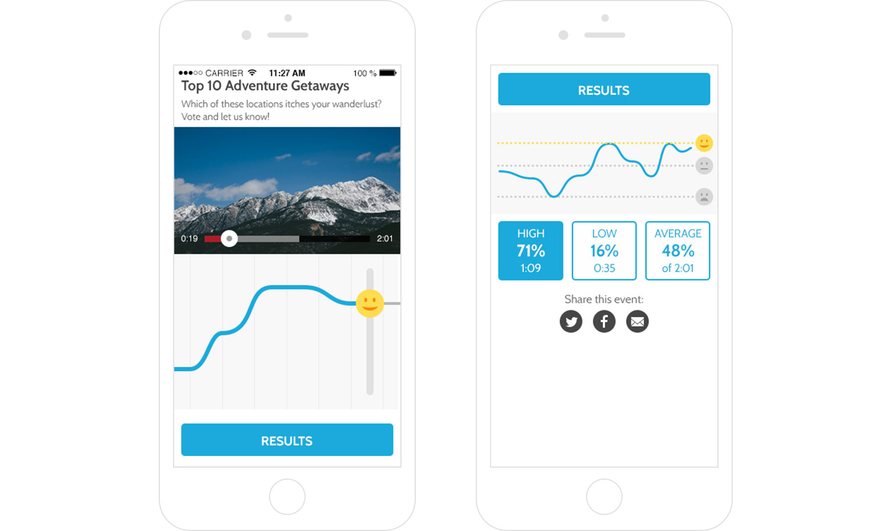
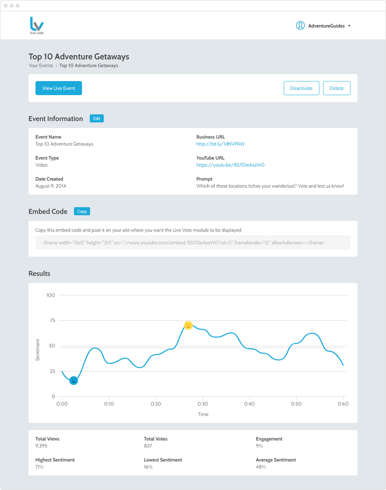
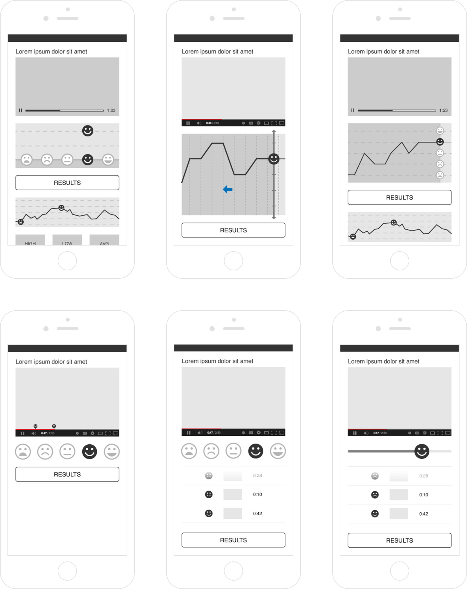
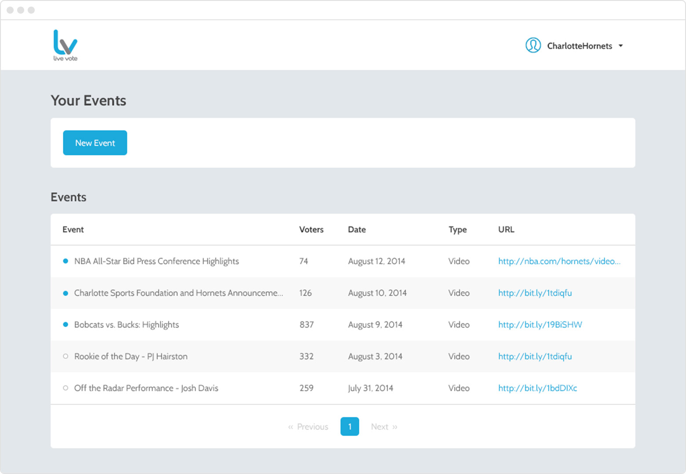
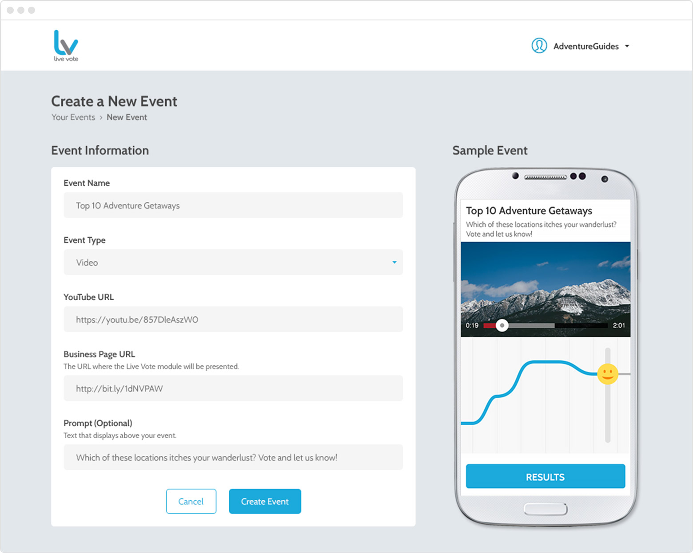
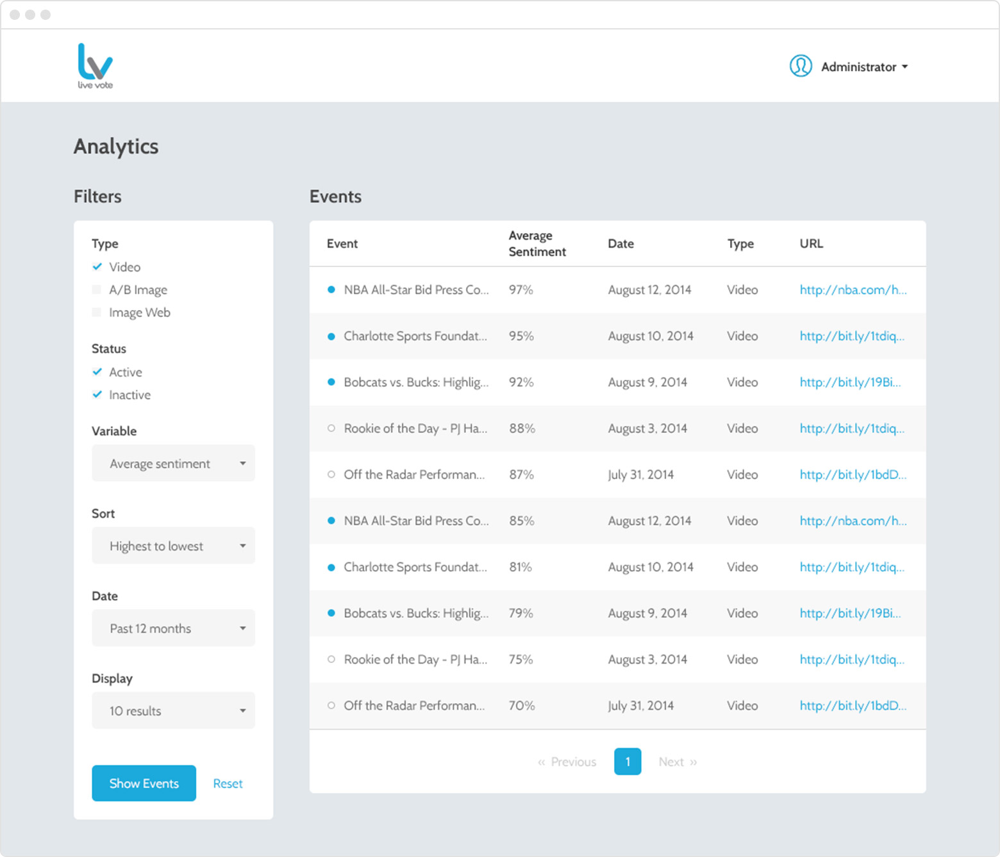
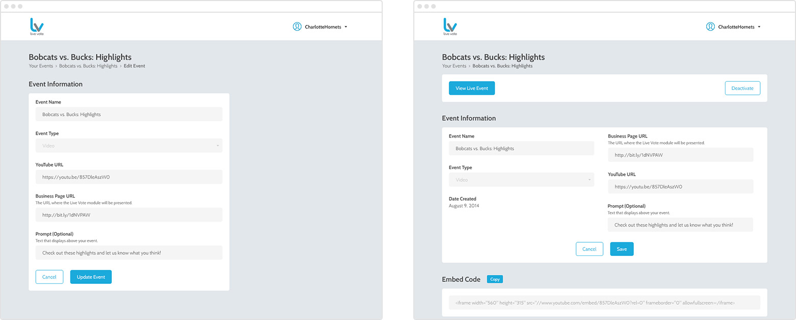
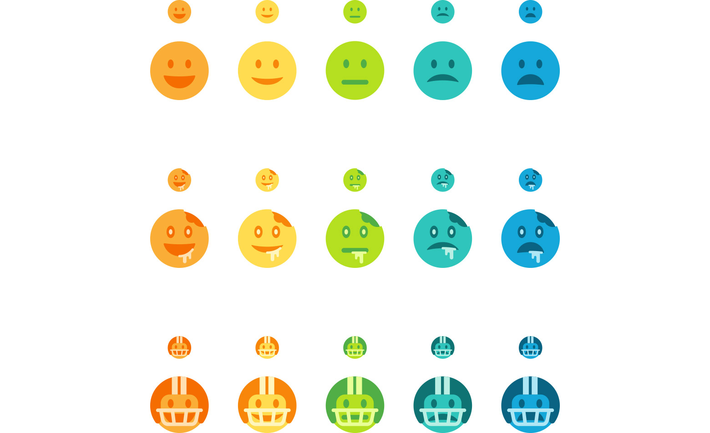
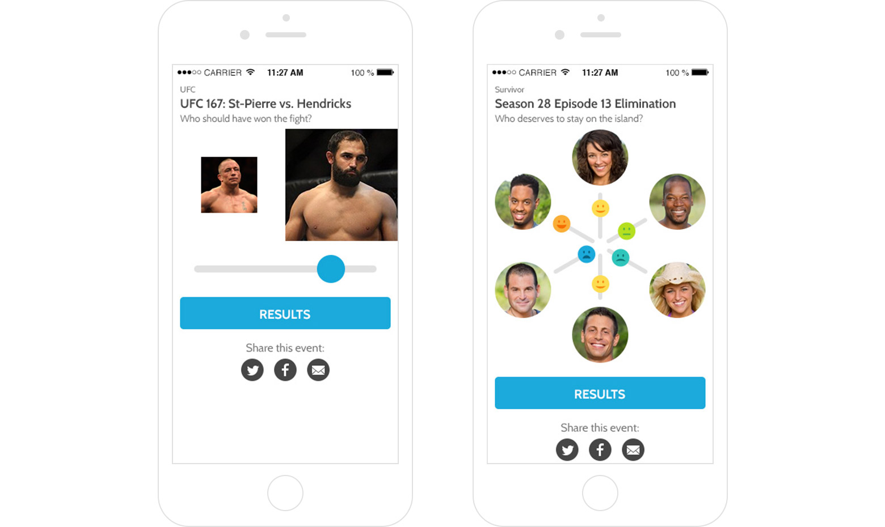

The challenge
Traditionally, content publishing has been a one-way street. A brand delivers the content to its viewers, and the interaction ends there. Live Vote gives viewers the power to voice their opinion at the exact location where it is relevant, in a way that can be quantified and aggregated into valuable data for brands to use.
The mobile video voting module, with the voting interface (left) and the results (right).
Live Vote has a tough challenge in that it must appeal to two audiences—brands, who are the actual customers and want to get actionable data from the platform, and their viewers, who are the end users that engage with the product. We had to find a balance between their two goals, and create something that users would enjoy interacting with that also provided enough valuable data for brands to use effectively.
The event details page, where brands can view event information and results.
Creating a voting module
With mobile video as our catalyst for gaining traction, we explored several variations of the video voting module. We compared several different ways users could cast their vote, and as a result, how that experience influenced their likelihood and their manner of voting. There were multiple combinations of use cases to consider, with scenarios such as users skipping forwards and backwards, overwriting previous votes, or bouncing from the video completely. We also explored different ways to display votes over time, both from the user’s own perspective, as well as the results of the entire audience. All of these decisions had to consider the implications to the viewer's experience, the value of the data gathered for brands to use, and the technical viability for us to build each option.
Wireframe variations for the voting module.
Providing brands with valuable data
In addition to the consumer-facing voting module, we built a lightweight administration portal for brands to create and manage events, and view the data on their sentiment reports. As an MVP, we worked together to figure out the most important data to display, while facilitating the possibility of scale in the future.
A listing of a brand's events.
Creating a new event, with a preview of what the voting module will look like.
An analytics suite used to compare event performance.
Thinking ahead
At the end of the project, we put together a list of improvements to the platform, which potentially could be achieved in later builds. Most of these included tweaks to the business user’s experience, such as turning the sample event into a live preview, improving the editing process of events, and giving brands the ability to customize their module as a value add. We also explored possible new voting modules as a way to expand the platform.
An improved event editing experience. Editing an event went from being on a separate page (left) to editing in context, straight from the event details (right).
Examples of potential custom slider smileys.
New event types: an A/B image survey (left), and an image web for voting against multiple images (right).
Reflections
Live Vote has a unique value proposition, and being able to work on a product where the competitive space is still being defined was a refreshing challenge. Easily the most exciting part of this project was working through the many possible directions we could have taken the voting module, and trying to balance the level of friction end users had to experience with the quality of data collected for the content creators. One point of concern was being able to display a live feed of data as we had envisioned, and the development team was really able to pull through to make that a reality. Hats off to them.
Truthfully, I don’t think we nailed the voting module. I think we put too much weight on the data collection and its marketability to brands over the experience of our end users. While the slider concept allows for precise voting, I think having a set of buttons to choose from makes the decision easier to make, and would drive higher engagement rates. I actually find the slider potentially confusing to some users, and the friction someone faces in learning how to vote could be enough to make them bounce. I would love to do some A/B testing to validate our assumptions.